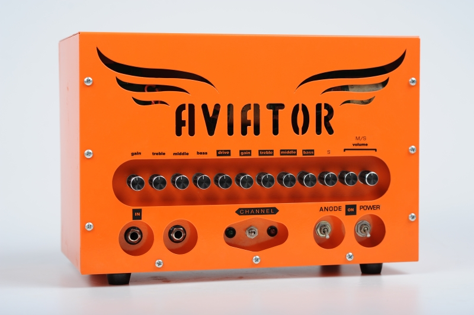
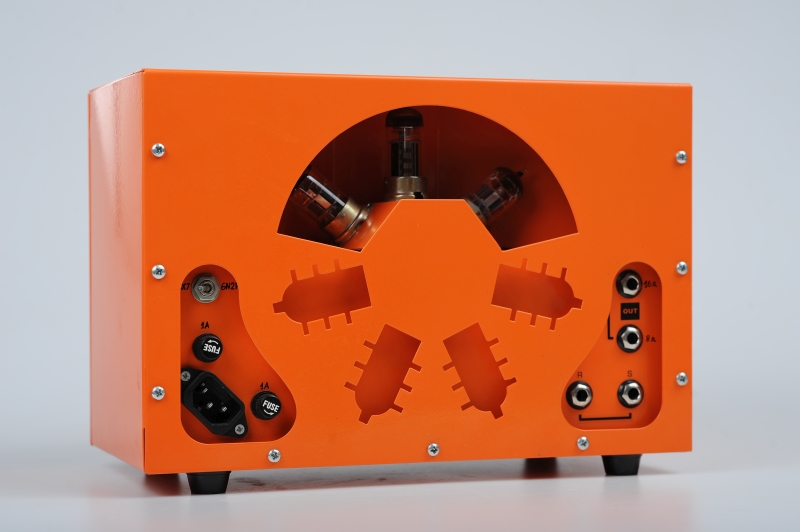

AVIATOR guitar amplifier
10w 2 channel all-tube amp
AVIATOR guitar amplifier - front view (click here to view specs)
Specs:
- 10 W @ 8/16 ohm load;
- gain, tonestack, volume - for each channel; master volume;
- serial effects loop and send volume;
- push-pull output;
- clean channel - Mesa Lonestar, overdrive channel - Marshall styled;
- socket for an external footswitch (with on/off indicator);
- you can switch the type of tubes used in the preamp section;
- dimensions of the casing 30 * 20 * 15 cm - a conventional bag would fit;
- a standard two-button footswitch can be used;
- solo mode (available with two-button footswitch);
- All tubes are JJ / Tesla (2*ECC83S+QQE06/12)
Rear panel resembles a rotative aircraft engine, very common in the constructions of powerful piston aircrafts of the twentieth century.
